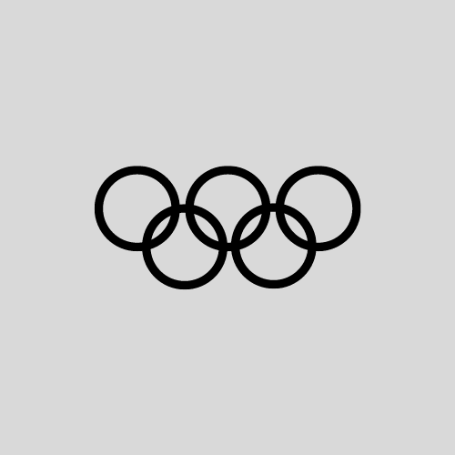

Le thème des Jeux Olympiques est un sujet actuel, tant inspirant qu'inépuisable. Depuis la création des olympiades modernes en 1896,
56 éditions ont été organisées, passant de 14 à plus de 200 délégations différentes, avec des centaines jusqu'aux milliers d'athlètes à chaque édition.
Nous voulons mettre un peu de lumière sur des données riches et abondantes apportant une analyse accessible à tous, des spécialistes aux plus novices.
D'autant plus que dans moins de 2 ans maintenant, en 2024, Paris accueillera les Jeux Olympiques d'été, et à cette occasion la francophonie se saisira certainement de ce sujet.
L'Olympisme : de belles valeurs qui rassemblent. Sachant certaines belligérances et les différentes crises actuelles,
le fait que chaque athlète de chaque pays peuvent concourir ensemble en oubliant le reste est sublime. En fait, le Comité Internationnal Olympique souhaite que l'Excellence,
l'Amitié et le Respect soient la base du développement de ses activités (Source).
Une approche différente des classements des médailles. Ces derniers temps, ces classements édités par le CIO sont fortement critiqués,
pour des raisons de mauvaise représentativité. En effet, c’est assez problématique, de classer les pays qu’avec leur nombre de médailles d’or.
Dès lors, la Chine (1,4 milliards d’habitants et 413 athlètes présentés dans 30 disciplines en 2020) est comparée, par exemple, avec le Pérou
(34 millions d’habitants et 35 athlètes présentés dans 17 disciplines en 2020). Ou si une nation ne gagne à une olympiade que des médailles de bronze ou d’argent,
elle est laissée à la fin du classement. C’est pour ces raisons que nous avons choisi le slogan « Explorons les Jeux Olympiques différemment »,
pour essayer de mettre sur un pied d'égalité les différentes délégations, en proposant d’autres classements qui montrent chacun une représentativité,
même si cela reste très subjectif.
| 
Malo AIT YAHIA Responsable des pratiques de code,
|
Thomas AYRIVIE Responsable rédactionnel,
|
Candice DEJEAN Responsable des pratiques de code,
|
Arthur COHEN SALMON Responsable réalisme et suivi global,
|
Christelle GEISWEILLER Responsable planification du travail,
|
Alex ROLAND Responsable de la vision utilisateur,
|